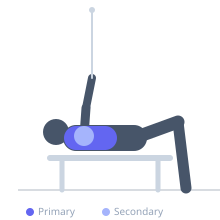

Exercise guide / Seated Bench Cable Crossover
Seated Bench Cable Crossover
A cable crossover performed while seated on a flat bench placed centrally between two cable stacks. The seated position eliminates leg drive and postural compensation, ensuring the movement is driven entirely by the pectoralis major and anterior deltoid. The bench also anchors the torso, allowing the arms to sweep fully without the torso swaying, which can improve mind-muscle connection and consistency.
Primary muscles
pectoralis major sternal
Secondary muscles
deltoid anterior
Stabilizers
erector spinae
transverse abdominis
Equipment
Cable Machine (Dual Pulley / Functional Trainer)
Flat Bench


Starting position
- Place a flat bench centered between two cable stacks. Set both pulleys to shoulder height when seated. Sit on the bench, hold one handle in each hand with arms extended to the sides.
Setup
- Position the bench so the seat is at the exact midpoint between the two stacks. Adjust pulley height to shoulder level in the seated position. Sit tall with the spine neutral.
Steps
- Step 1: Sit tall on the bench, arms extended to the sides at shoulder height, slight elbow bend.
- Step 2: Bring both handles together in front of the chest in a sweeping arc.
- Step 3: At the midpoint, hands cross slightly (crossover) and squeeze hard.
- Step 4: Return under control, letting handles sweep back to the sides. Alternate which hand crosses on top each rep.
Coaching cues
- Sit tall — imagine a string pulling you up from the crown of your head
- Sweep from the chest — think of hugging a barrel
Breathing
- Exhale on the crossover, inhale on the return.
Range of motion
- Full sweep from arms extended to full crossover. The seated position and bench anchor point define the natural range.
Tempo
- 2-1-2-1
Common mistakes
- Leaning forward during the movement — maintain an upright seated position throughout
- Bending elbows too much — keep the slight, fixed bend throughout the arc
- Bench placed off-center, creating uneven cable tension
Safety
- Ensure the bench is stable and not at risk of tipping
- Keep the spine neutral — avoid rounding forward during the crossover
Training
- hypertrophy: 10–15 reps
- endurance: 15–20 reps
- hypertrophy: 3–4 sets
- Rest: {'hypertrophy': 75}